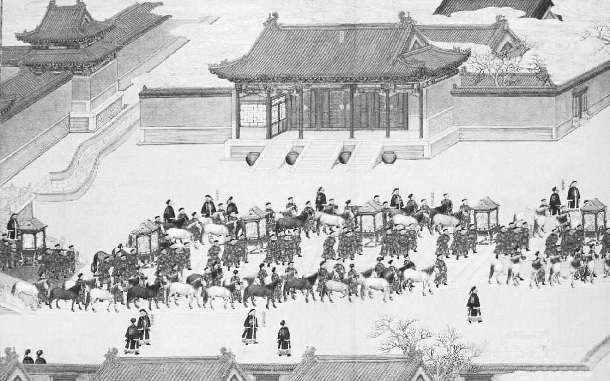
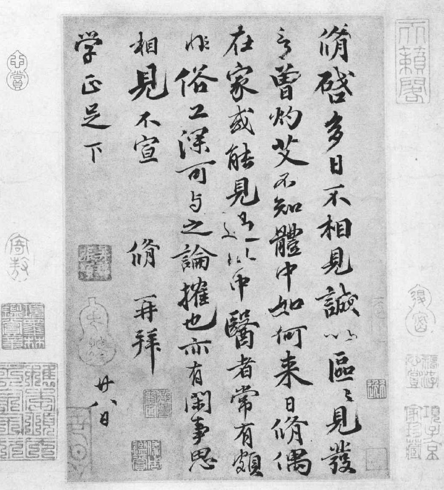

第四章 应试
苏东坡兄弟年二十岁左右，已经准备好去赶考之时，不可免的事——婚姻问题也就来临了。他们若是未婚进京，并且一考而中，必然有女儿长成之家托人向他们提亲。那时有求婚的风俗。京都中有未婚之女的富商都等待着考试出榜，向新得功名的未婚举子提亲。所以科举考试举行的季节，也是婚姻大事进行得活跃的季节。在父母的眼光看来，让儿子娶个本地姑娘，他们对姑娘的家庭知根知底，自然好得多。按照当年的风俗，青年的婚姻一向是由父母妥为安排，苏东坡年十八岁时，娶了王弗小姐。王弗小姐那时十五岁，住家在青神，在眉山镇南约十五里，靠近河边。次年弟弟子由成家，年十六岁，妻子比他小两岁。当然算是早婚，但是并不足为奇。
从根本道理上看，早婚，当然并不一定像苏氏兄弟那么早，在选择与吸引合意的配偶时，可以省去青年人好多时间的浪费和感情的纷扰。在父母看来，年轻人若能把爱情恋爱早日解决，不妨碍正事，那最好。在中国，父母自然应当养儿媳妇，年轻的男女无须乎晚婚。而且一位小姐爱已经成为自己丈夫的男人和爱尚未成自己丈夫的男人，还不是一样？不过在拼命讲浪漫风流的社会里，觉得婚前相爱更为惊奇可喜罢了。无论如何，苏家兄弟婚后都很美满。但这并不是说由父母为儿女安排的婚姻不会出毛病，也不是说这样的婚姻大多都幸福。所有的婚姻，任凭怎么安排都是赌博，都是茫茫大海上的冒险。天下毕竟没有具有先见的父母或星相家，能预知自己儿女婚姻的结果，即便是完全听从他们的安排也罢。在理想的社会里，婚姻是以玩捉迷藏的方式进行的，未婚的青年男女年龄在十八岁到二十五岁之间，然而只要当地社会伦理和社会生活十分安定，幸福的婚姻的比例也许还是一样。男人，十八岁也罢，五十八岁也罢，在挑选配偶时，仍然是以自然所决定的性优点为根据的，几乎没有例外。他们仍然是力图做明智的选择，这一点就足以使现代的婚姻不致完全堕落为动物的交配。婚姻由父母安排的长处是简单省事，容易成就，少废时间，选择的自由大、范围广。所有的婚姻都是缔构于天上，进行于地上，完成于离开圣坛之后。
次子子由成婚之后，父子三人启程赴京。他们先要到省会成都，拜谒大官张方平，后来张方平对苏东坡几乎如同严父。为父的仍然打算求得一官半职。他现年四十七岁，但自上次科举名落孙山之后，一直苦读不懈。在那期间，他已经写了一部重要的著作，论为政之道、战争与和平之理，显示出真知灼见，此一著作应当使京都文人对他刮目相看。当时只要有名公巨卿有力推介，朝廷可以任命官职。苏洵把著作呈献给张方平，张方平对他十分器重，有意立刻任他为成都学官。但是，老苏意犹未足。最后，张方平在古道热肠之下，终因情面难却，乃写信给文坛泰斗欧阳修，其实当时张与欧阳相处并不十分融洽。另外有一位雷姓友人，也写了一封推荐信，力陈老苏有“王佐”之才。怀有两封致欧阳修与梅尧臣的书信，父子便自旱路赴京，迢迢万里，要穿剑阁，越秦岭，为时需两月有余。
在仁宗嘉祐元年（一〇五六年）五月，三苏到了汴梁城，寄宿于僧庙，等待秋季的考试。这是礼部的初试，只是选择考生以备次年春季皇帝陛下亲自监督的殿试。在由眉州来京的四十五个考生之中，苏氏昆仲在考中的十三名之内。当时除去等候明春的殿试之外，别无他事，父子三人乃在京都盘桓，在城内游览，参加社交活动，与社会知名人士结交。苏洵将著作向德高望重的欧阳修呈上。欧阳修一副和蔼可亲的样子，两耳长而特别白皙，上唇稍短，大笑时稍露牙龈。欧阳修看来并非美男子，但是一见这位文坛盟主而获得他的恩宠，却足以使天下士子一慰其梦寐之望。欧阳修之深获学术界敬爱，是由于他总是以求才育才为己任。他对苏洵热诚接待，并经他介绍，老苏又蒙枢密韩琦邀请至家，又转介绍认识一些高官显宦。不过苏洵的冷淡、自负的态度，在朝廷的领袖人物心目之中并未留下什么好印象。
《清帝迎亲图》中国画 清
在我国古代，婚姻几乎完全取决于“父母之命，媒妁之言”。因此，婚前礼的一切仪节，包括从择偶至筹备正式婚礼的一系列环节，几乎都由双方父母包办，真正婚姻的当事人反而被排除在外。在这个方面，即使是处于统治顶端的皇帝也不例外。
苏氏兄弟则游逛华美的街市，吃有名的饭馆子，站在寒冷的露天之下，以一副羡慕的心情注视大官在街上乘坐马车而过。宋朝共有四个都城，河南开封为首，称为东京。开封有外城内城。外城方十三里，内城七里，城周有城门十二座，入城处有两层或三层的城圈，用来围困进犯的敌军。城墙上筑有雉堞，供发炮射箭之用。因为国都地处一低下之平原，无险可守，只有北部黄河绵延约有二百里（今日之陇海铁路即沿河而行），可以拱卫国都，因此拟定了一个设想极为周密的军事防御计划。
在西部洛阳，距开封约一百三十里，建立西京，用以扼制经军事要隘潼关自西北而来的进犯。在东部约八十里以外的商丘，设立另一军事重镇，是为南京。并不怕有敌人自南部而来。在另一方面，唐朝末年，蛮族已自北方侵入中国。当时有一军阀，由于向北番异族一霸主效忠，在其卵翼之下，遂成立朝廷，对抗中国。石敬瑭向契丹王以儿子自称，但自谓深爱中国并关心国家之太平与百姓之幸福。他自称“儿皇帝”，称契丹王为“父皇帝”。他在世时使中国开始分裂，获取外族之赞美。因此，国家应当慎谋严防有此等情形出现。因为，不论古今，在中国总是有打着爱国旗号的汉奸，只要自己能大权在握显赫一时，便在救国救民的堂皇名义之下，甘心充当异族的傀儡。石敬瑭后来以“儿皇帝”之身，为“父皇帝”剽夺权柄，羞愤而死，此一事实并不足以阻止十二世纪时另一傀儡张邦昌之出现。而张邦昌在失去利用价值后，立即被推翻，弃如敝屣，并不足以阻止十七世纪另一个汉奸吴三桂向关外借兵，进入长城，让满洲人毁灭了中国政府。宋朝因此在河北南部的大名府建立了北京，遏制北方异族的南侵。
开封是中国首都大城，保有皇都的雄伟壮丽，财富之厚、人才之广、声色之美，皆集于朝廷之上。城外有护城河围绕，河宽百尺，河的两岸种有榆树、杨柳，朱门白墙掩映于树木的翠绿之间。有四条河自城中流过，大都是自西而东，其中最大者为汴河，从安徽河南大平原而来的食粮全在此河上运输。河上的水门夜间关闭。城内大街通衢，每隔百码设有警卫。自城中流过的河道上，架有雕刻的油漆木桥相通。最重要的一座桥在皇宫的前面，乃精心设计，用精工雕刻的大理石筑成。皇宫位于城市之中央。南由宣德楼下面的一段石头和砖建的墙垣开始，皇宫的建筑则点缀着龙凤花样的浮雕，上面是光亮闪烁的殿顶，是用各种颜色的琉璃瓦建成的。宫殿四周是大街，按照罗盘的四角起的街名。皇宫的西面为中书省和枢密院。在外城的南部，朱雀门之外，有国子监和太庙。街上行人熙来攘往，官家的马车、牛车、轿子——轿子是一般行旅必需的——另外有由人拉的两轮车，可以说是现代东洋车的雏形，这些车轿等在街上川流不息。坐着女人的牛车上，帘子都放了下来。在皇城有个特点，就是必须戴帽子，即使低贱，如算命看相的，也要打扮得像个读书人。
殿试的日子到了。皇帝任命欧阳修为主试官，另外若干饱学宿儒为判官。在读书人一生这个紧要关头到来之际，大家心中都是紧张激动，患得患失。过去多年来三更灯火五更鸡的苦读力学，都是为了这一时刻。考生必须半夜起身，天甫黎明就要来到皇宫之外，身上带着凉的饭食，因为没考完是不许出考场的。在考试时，考生要各自关闭在斗室之中，有皇宫的侍卫看守。朝廷有极严厉的规定，借以防止纳贿或徇私。考生的试卷在交给考试官之前，先要由书记重抄一遍，以免认出试卷的笔迹。在重抄的试卷上，略去考生的名字，另存在档册里。考生在考完放出之时，判官则被关入宫中闱场，严禁与外界有任何接触，通常是从正月底到三月初，直到试卷阅毕呈送给皇上为止。考生首先考历史或政论，次考经典古籍。最后，录取者还要在皇帝陛下亲自监察之下考诗赋，然后再考策论。宋仁宗特别重视为国求才，对这种考试极为关注。他派贴身仆臣把题目送去，甚至有时为避免泄露，他还在最后一刹那改变题目。
苏氏兄弟都以优等得中。苏东坡的文章后来欧阳修传给同辈观看，激赏数日。那篇文章论的是为政的宽与简，这正是苏东坡基本的政治哲学。不过，不幸有一个误会。欧阳修对此文章的内容与风格之美十分激赏，以为必然是他的朋友曾巩写的。为了避免招人批评，他把本来列为首卷的这篇文章改列为二卷，结果苏东坡那次考试是名列第二。在仁宗嘉祐二年（一〇五七年）四月八日，苏东坡考中，在四月十四日，他那时才二十岁，成为进士，在三百八十八人之中几乎名列榜首。得到此项荣誉，于是以全国第一流的学者知名于天下。
苏东坡这个才气纵横的青年，这次引用历史事例，却失之疏忽，而且在试卷上杜撰了几句对话。他发挥文意时说，在赏忠之时，宁失之宽厚，在罚罪之时，当恻然有哀怜之心，以免无辜而受戮。他写道：“当尧之时，皋陶为士，将杀人。皋陶曰杀之三。尧曰宥之三。”这几句对白读来蛮好，显示贤君亦肯用不肖，使之有一展长才之日，这种史实颇可证实明主贤君用人之道。判官梅圣俞阅卷至此，对尧与皋陶有关此事之对白，不敢公然提出查问，因为一经提出，即表示自己对年久湮没的古籍未曾读过。苏东坡因此才得以混过。考试过去之后，梅圣俞一天问苏东坡：
“可是，尧和皋陶这段话见于何书？我一时想不起在何处读过。”
苏东坡这位年轻学者承认说：“是我所杜撰。”
梅圣俞这位前辈宿儒大惊：“你所杜撰！”
东坡回答说：“帝尧之圣德，此言亦意料中事耳。”
主考官录取一学生，即表示自己恪尽其职发现了真才，二人彼此之间即形成了“老师”与“门生”终生不渝的关系。考中的门生要去拜谒主考老师致敬，并修函感谢恩德。欧阳修为当时文学权威，一字之褒，一字之贬，即足以关乎一学人之荣辱成败。当年一个作家曾说，当时学者不知刑罚之可畏，不知晋升之可喜，生不足欢，死不足惧，但怕欧阳修的意见。试想一想，欧阳修向同僚说的话，那该有何等的力量啊！他说：“读苏东坡来信，不知为何，我竟喜极汗下。老夫当退让此人，使之出人头地。”这种话由欧阳修口中说出，全京人人都知道了，据说欧阳修一天对儿子说：“记着我的话。三十年后，无人再谈论老夫。”他的话果然应验，因为苏东坡死后的十年之内，果然无人再谈论欧阳修，大家都谈论苏东坡。他的著作在遭朝廷禁阅之时，有人还暗中偷读呢。
苏东坡的宦途正要开始，母亲病故。根据儒家之礼，这当然是极其重大之事，甚至官为宰相，也须立即退隐，守丧两年三个月之后，才能返回复职。东坡的姐姐已于数年前去世，因此苏家全家三个男人进京应试之后，家中只有母亲和两个儿媳妇。母亲死时还没听到京都的喜讯。苏家父子三人急忙返家，到家只见母亲已去，家中一团纷乱，篱墙倾倒，屋顶穿漏，形如难民家园。
正式办完丧礼之后，他们在一山坡之下名为“老翁泉”的地方，挑选一处作为苏家的茔地。这个泉之所以得名，是因为当地人说月明之夜，可见一白发俊雅老翁倚坐在堤防之上，有人走近时，老翁则消失于水中。后来苏洵也埋葬于此，因为那片地方的名称，苏洵通常亦称为“苏老泉”。
苏洵在祭妻文里说：
非官寔好，要以文称。……嗟予老矣，四海一身。自子之逝，内失良朋。……昔予少年，游荡不学。子虽不言，耿耿不乐。我知子心，忧我泯没。感叹折节，以至今日。……有蟠其丘，唯子之坟。凿为二室，期与子同。……我归旧庐，无不改移。魂兮未泯，不日来归。
居丧守礼之下的两年又三个月的蛰居生活，是苏东坡青年时期最快乐的日子。兄弟二人和年轻的妻子住在一起。东坡常到青神岳家去，青神位于美丽的山区，有清溪深池，山巅有佛寺，涉足其间，令人有游仙寻异超然出尘之感。东坡常与岳家叔伯表兄弟等前往庙中游历，坐在瑞草桥附近的堤防上，以野外餐饮为乐。在夏季的夜晚，他坐在茅屋之外，吃瓜子和炒蚕豆。岳家为大家庭，有岳父王方，两个叔叔及其妻子儿女。在岳家约三十个人之中，有一个小姐，名唤“二十七娘”，是命定与苏东坡一生不可分的。
欧阳修手迹 书法 欧阳修 宋
欧阳修（1007—1072），字永叔，自号醉翁，晚年更号六一居士，世称欧阳文忠公。“唐宋八大家”之一。其于政治和文学方面都主张革新，又喜奖掖后进，苏洵父子及曾巩、王安石皆出其门下。创作实绩亦粲然可观，诗、词、散文均为一时之冠。
这时，老苏正在等待京中的任命消息。这时他接受官职并无不当，因为妻丧和母丧不同。京师已经有巨官显宦答应提拔他，但是他已等了一年有余，尚无消息到来。最后，终于有圣旨降临，要他赴京参加一种特殊考试。这一来，此翁着了慌。因为这时他已经有了一种惧怕考试的心理。他给皇帝上一奏折，谢绝前去，以年老多病为辞。但是在给朋友的信里则说：“仆……固非求仕者，亦非固求不仕者。……何苦乃以衰病之身，委曲以就有司之权衡，以自取轻笑哉！……向者《权书》衡论《几策》……乃欧阳永叔以为可进而进之。苟朝廷以为其言之可信，则何所事试？苟不信其平居之所云，而其一日仓卒之言，又何足信邪？”给梅圣俞的信里说：“唯其平生不能区区附合有司之尺度，是以至此穷困。……自思少年尝举茂才，中夜起坐，裹饭携饼，待晓东华门外，逐队而入，屈膝就席，俯首据案。其后每思至此，即为寒心……”
第二年，仁宗嘉祐四年（一〇五九年）六月，他又接到朝廷的圣旨，仍是上一次的内容，并未言及免除任何考试，自然不能餍足老泉之望。朝廷主其事者当对他前所呈奏信而不疑才是——相信固好，否则即搁置亦可。他是不肯像学童一样去接受考问的，所以他再度辞谢。他的奏折上说他已年近五十。五十之年又何以能报效国家？身为读书人，之所以愿居官从政，欲有以报效国家也，否则为一寒士足矣。倘若他此时再入仕途，既无机会以遂报国之志，又不能享隐逸贤达之清誉。他最后结束说，时已至夏季，下月其子之居丧期将满，他将随子入都一行。届时当一谒当道，细叙情由。全信之语气显示他在五十之年，实已无意入朝为官，除非有力人士能使他不再如童子之受考试。
事实上，苏洵的妻子已死，他已准备远离家乡而不复返。非常明显，他是适于住在京都的。他的两个儿子既然已中进士，下一步就看朝廷何时有缺可以派儿子去任职，他自己倒也罢了。在居丧期满之后刚过两个月，父子三人又再度启程入京，这一次有两个儿媳同行，出发之前，已经把亡母之灵柩安排妥当。苏洵使人请了六尊菩萨像，安放在两个雕刻好镀金的佛龛中，供在极乐院的如来佛殿里。那六尊菩萨是：观世音菩萨、势至菩萨、天藏王、地藏王、解冤王者、引路王者。出发之前，苏洵正式把这些佛像供在庙里，并且去亡妻灵前告别。祭文的结语是：“死者有知，或生于天，或生于四方上下，所适如意，亦若余之游于四方而无系云尔。”